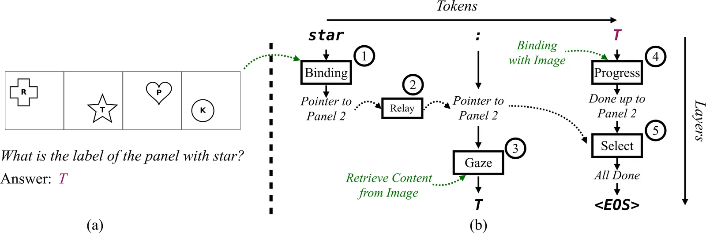
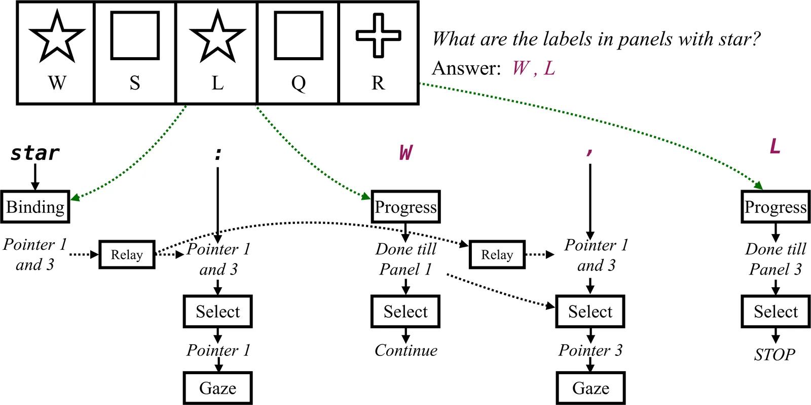
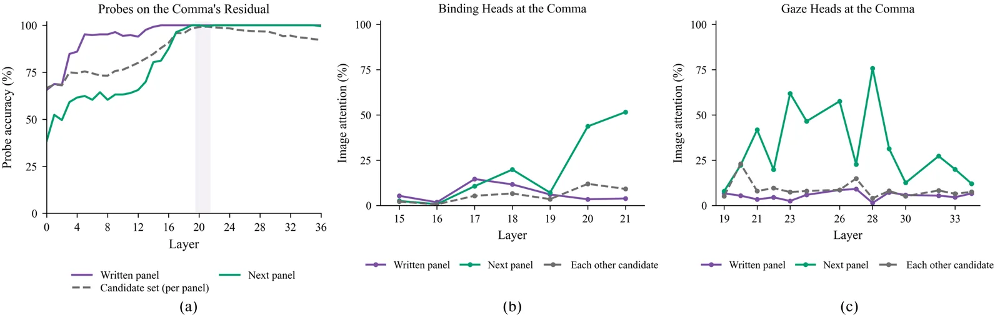
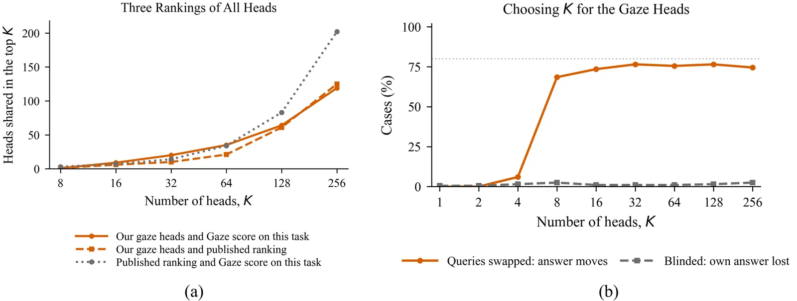

O Problema da Sequencialidade em Imagens
Modelos Visuais-Linguísticos (VLMs) enfrentam um desafio fundamental que não existe em modelos puramente de linguagem: a imagem é uma entrada bidimensional, enquanto a saída é uma sequência unidimensional de tokens. Não há uma ordem intrínseca nas imagens; o modelo precisa decidir onde olhar primeiro, depois segundo, e assim por diante. Quando um VLM descreve uma imagem, ele nomeia objetos um por um, raramente se repetindo. Isso implica que o modelo não apenas reconhece conteúdo, mas também planeja a ordem de exposição e mantém um estado de progresso ao longo da geração.
Trabalhos anteriores identificaram partes desse mecanismo, como as 'Gaze Heads' (cabeças de olhar), que direcionam a atenção para a região correta da imagem. No entanto, como o modelo resolve tarefas com múltiplas respostas, mantendo o controle do que já foi dito, permanecia obscuro. Em um transformer autoregressivo, o estado não pode ser mantido como uma variável global atualizada; ele deve ser recalculado a cada token, usando os tokens gerados anteriormente. Este paper investiga exatamente como esse recálculo de progresso ocorre.
Os autores, da Northeastern University, propõem que o modelo utiliza um plano estruturado e modular. Eles caracterizam esse plano em quatro partes principais: vinculação (binding), transmissão (relay), seleção (select) e leitura (gaze). Para validar essa hipótese, eles não dependem apenas de observações correlacionais, mas utilizam técnicas de causal patching em modelos Qwen3-VL e outros, isolando cada etapa para ver seu efeito direto na saída do modelo.

O Experimento de Recuperação Sintética
Para estudar causalmente esse planejamento, os autores projetaram uma tarefa sintética controlada. Eles usam imagens compostas por uma tira de painéis, onde cada painel contém uma forma geométrica e uma letra. A pergunta ao modelo é algo como: 'Qual é o rótulo do painel com a estrela?'. Essa configuração permite controlar exatamente quais objetos o modelo deve descrever e em que ordem, algo difícil de fazer com descrições abertas de fotos naturais.
A tarefa é dividida em dois cenários: recuperação única (um objeto correspondente) e recuperação em lista (múltiplos objetos correspondentes). No cenário de lista, o modelo deve listar todas as letras dos painéis que contêm a forma solicitada, sem repetições. Isso força o modelo a desenvolver um mecanismo de rastreamento de progresso. Se o modelo falhar nesse rastreamento, ele tenderá a repetir a mesma resposta ou pular itens aleatoriamente.
Os autores testaram essa tarefa em seis modelos diferentes, incluindo Qwen3-VL, Gemma 3, Idefics3, LLaVA-OneVision e Pixtral, com tamanhos variando de 2B a 32B. A escolha de múltiplos modelos permite verificar se o mecanismo descoberto é uma característica geral dos VLMs ou um artefato de uma arquitetura específica. Os resultados mostram que, embora a implementação exata possa variar ligeiramente, a lógica modular do plano é consistente.
O Mecanismo de Quatro Etapas
O cerne deste paper é a descrição detalhada do mecanismo interno que permite ao VLM planejar. O processo começa quando o modelo processa o token da forma solicitada (por exemplo, 'star'). Neste ponto, as 'Binding Heads' (cabeças de vinculação) ativam-se. Elas correspondem os tokens de texto relevantes da pergunta contra a imagem, resolvendo-os em ponteiros para as regiões da imagem correspondentes. É importante notar que essa vinculação ocorre cedo, muito antes do modelo gerar a resposta final.
Em seguida, as 'Relay Heads' (cabeças de transmissão) carregam esses ponteiros do token da forma para o token onde a resposta deve ser produzida (geralmente o token ':' ou 'Answer:'). Em modelos como o Qwen3-VL, um único vetor residual no token dois-pontos carrega essa informação em mais de 65% dos casos. Isso demonstra que a informação visual é transferida de forma explícita através da arquitetura do transformer, não apenas implícita na atenção distribuída.
Uma vez que o ponteiro chega ao token de resposta, as 'Gaze Heads' executam a leitura. Elas direcionam a atenção para a região apontada e extraem o conceito visual correspondente (a letra no painel). Finalmente, as cabeças de linguagem e os MLPs tardios traduzem esse conceito visual em um token de linguagem (a letra 'T', por exemplo). Esse ciclo de vincular, transmitir, olhar e gerar forma a base da descrição única.

Rastreamento de Progresso e Evitação de Repetições
A parte mais sofisticada do mecanismo é como o modelo lida com múltiplas respostas. Quando há vários painéis correspondentes, o modelo precisa saber quais já foram listados. Os autores descobrem que o modelo recalcula seu progresso a cada token. Após gerar uma resposta (por exemplo, a letra 'T'), as Binding Heads vinculam essa resposta de volta ao painel de onde ela veio. O token vírgula (',') então atua como um cursor, transformando essa informação em um sinal de progresso: a posição na imagem até a qual a lista foi escrita.
Um passo de 'Seleção' (Select Step) então escolhe a região não descrita mais próxima após o cursor. Se não houver mais regiões, o modelo gera o token de fim de sequência (<EOS>). Esse mecanismo é robusto: se os autores bloqueiam a atenção do token vírgula ao token da resposta anterior, o modelo começa a repetir a mesma letra em 56% a 97% dos casos, dependendo do modelo. Isso prova causalmente que a vírgula e a resposta anterior são essenciais para o rastreamento de progresso.
Os autores também analisam o que o vetor residual do token vírgula contém. Usando sondas lineares (ridge probes), eles mostram que o estado do painel já escrito é recuperado com alta precisão (até 100% em algumas camadas). A ordem dos estados ao longo da profundidade da rede é consistente: primeiro um skip, depois uma contagem, depois o cursor, e por fim a escolha da fonte. Isso sugere que a arquitetura do transformer organiza implicitamente a lógica de controle sequencial.
Robustez e Generalização
Uma questão crucial é se esse mecanismo é específico para a tarefa sintética ou se generaliza para o mundo real. Os autores testam o mecanismo em imagens de quadrinhos com prompts mais longos e complexos. Os resultados mostram que as mesmas cabeças de Gaze e Binding continuam funcionando, embora com algumas variações na profundidade das camadas onde os ponteiros são mais fortes. Isso indica que a arquitetura de planejamento é robusta a mudanças no estilo da imagem e na complexidade do prompt.
Eles também testam o mecanismo em perguntas de lista sobre fotos naturais. Embora a tarefa seja mais difícil devido à variabilidade das imagens, as cabeças identificadas na tarefa sintética ainda desempenham papéis semelhantes na recuperação de conteúdo. Isso sugere que, mesmo em tarefas complexas e não estruturadas, os VLMs podem estar utilizando um subconjunto desses mecanismos modulares para organizar sua atenção e geração de texto.
O estudo também compara a eficácia das cabeças descobertas com rankings publicados anteriormente. A busca de patching de query dos autores compartilha significativamente mais cabeças com o ranking de Gaze publicado do que outros métodos de ranking anteriores. Isso valida que a abordagem causal é mais precisa para identificar os componentes funcionais reais do modelo.

Limitações e Implicações
Apesar dos avanços, o paper reconhece limitações. Nem todos os modelos testados resolvem a tarefa de lista com a mesma eficiência. LLaVA-OneVision e Idefics3 tiveram desempenho inferior na tarefa de lista com o prompt específico, e LLaVA-OneVision tendia a listar letras de todos os painéis, independentemente da forma. Isso indica que a robustez do mecanismo de planejamento varia entre arquiteturas e que alguns modelos podem não ter desenvolvido plenamente a capacidade de rastreamento de progresso modular.
Além disso, o estudo foca em uma tarefa sintética específica. Embora haja evidências de generalização para quadrinhos e fotos naturais, o plano exato pode ser mais fragmentado ou menos explícito em tarefas de descrição livre, onde o modelo tem mais liberdade criativa. O paper não explora como esse planejamento interage com raciocínio lógico complexo ou com tarefas que exigem inferência causal além da simples recuperação de objetos.
Apesar dessas limitações, o trabalho oferece uma ferramenta poderosa para auditoria e depuração de modelos. Ao isolar as etapas de planejamento, os pesquisadores podem identificar onde o modelo falha: se ele não encontra o objeto, se não transmite o ponteiro corretamente, ou se falha no rastreamento de progresso. Isso abre caminho para intervenções diretas no modelo, permitindo corrigir erros de planejamento sem necessidade de retreinamento pesado.

Conclusão: Um Novo Olhar sobre o Raciocínio Visual
Este paper desmonta a caixa preta do planejamento em VLMs, mostrando que eles não apenas 'veem' e 'falam', mas seguem um algoritmo estruturado para coordenar essas ações. A descoberta de que o modelo recalcula seu progresso a cada token, usando componentes modulares de vinculação e seleção, desafia a noção de que o raciocínio em LLMs/VLMs é puramente estatístico e distribuído. Em vez disso, há uma arquitetura de controle explícita embutida nas camadas intermediárias.
Para desenvolvedores e cientistas de dados, isso significa que podemos começar a intervir nos processos internos dos modelos. Se sabemos que as 'Gaze Heads' são responsáveis por olhar para a região correta, podemos monitorar ou ajustar essas cabeças para melhorar a precisão em tarefas críticas. Além disso, entender como o modelo evita repetições pode inspirar novos métodos de regularização ou estruturação de prompts para tarefas de geração de listas.
O trabalho da Northeastern University estabelece um novo paradigma para estudar modelos multimodais. Ao criar tarefas sintéticas que permitem o controle causal rigoroso, os autores fornecem um modelo para desvendar outros aspectos do raciocínio em IA. Isso não apenas explica como os VLMs atuais funcionam, mas também aponta o caminho para modelos mais confiáveis, explicáveis e robustos no futuro.
O que fica
- VLMs não geram texto aleatoriamente; eles seguem um plano modular com etapas distintas de vinculação, seleção e leitura.
- O modelo recalcula seu progresso a cada token, usando o token anterior como cursor para evitar repetir objetos já descritos.
- Cabeças de 'Gaze' e 'Binding' são responsáveis por localizar regiões na imagem e traduzi-las em tokens de linguagem.
- O mecanismo foi validado causalmente em modelos de 2B a 32B, mostrando robustez entre diferentes formatos de imagem e idiomas.
Paper original: How VLMs Plan What's Next
Comentários
Nenhum comentário ainda. Seja o primeiro.